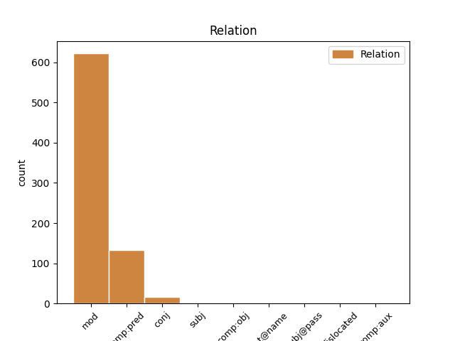
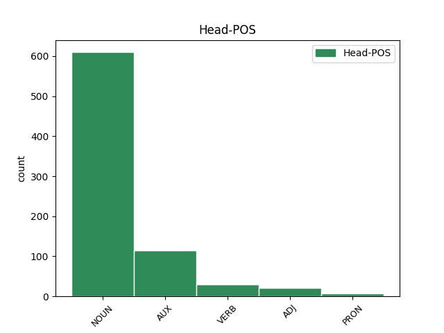
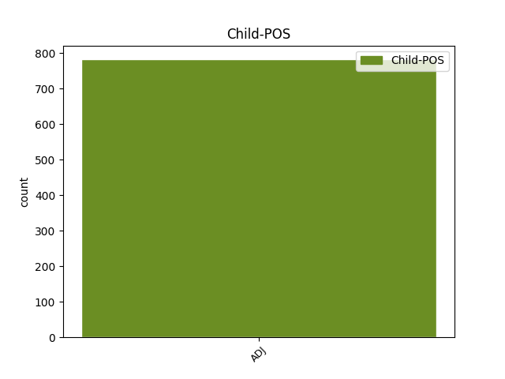

Distribution of features within this leaf



Agreement Rules sorted by frequency.
- When the dependent token is the modifer(mod) of the head token, and the dependent token is ADJ.
1 Salvini _ _ _ _ 0 _ _ _
2 : _ _ _ _ 0 _ _ _
3 " _ _ _ _ 0 _ _ _
4 A _ _ _ _ 0 _ _ _
5 settembre _ _ _ _ 0 _ _ _
6 fermerò _ _ _ _ 0 _ _ _
7 l' _ _ _ _ 0 _ _ _
8 Italia _ _ _ _ 0 _ _ _
9 per _ _ _ _ 0 _ _ _
10 tre _ _ _ _ 0 _ _ _
11 giorni _ _ _ _ 0 _ _ _
12 " _ _ _ _ 0 _ _ _
13 . _ _ _ _ 0 _ _ _
14 Si _ _ _ _ 0 _ _ _
15 sta _ _ _ _ 0 _ _ _
16 preparando _ _ _ _ 0 _ _ _
17 a _ _ _ _ 0 _ _ _
18 dire _ _ _ _ 0 _ _ _
19 la _ _ _ _ 0 _ _ _
20 stronzata stronzata NOUN S Gender=Fem|Number=Sing 0 _ _ _
21 definitiva definitivo ADJ A Gender=Fem|Number=Sing 20 mod _ SpaceAfter=No
22 . _ _ _ _ 0 _ _ _
23 [ _ _ _ _ 0 _ _ _
24 comagirl00 _ _ _ _ 0 _ _ _
25 ] _ _ _ _ 0 _ _ _
1 Ho _ _ _ _ 0 _ _ _
2 un' _ _ _ _ 0 _ _ _
3 idea _ _ _ _ 0 _ _ _
4 rivoluzionaria _ _ _ _ 0 _ _ _
5 : _ _ _ _ 0 _ _ _
6 che _ _ _ _ 0 _ _ _
7 sia essere AUX V Mood=Sub|Number=Sing|Person=3|Tense=Pres|VerbForm=Fin 0 _ _ _
8 possibile possibile ADJ A Number=Sing 7 comp:pred _ _
9 licenziare _ _ _ _ 0 _ _ _
10 chi _ _ _ _ 0 _ _ _
11 insegna _ _ _ _ 0 _ _ _
12 male _ _ _ _ 0 _ _ _
13 oltre _ _ _ _ 0 _ _ _
14 a _ _ _ _ 0 _ _ _
15 premiare _ _ _ _ 0 _ _ _
16 chi _ _ _ _ 0 _ _ _
17 insegna _ _ _ _ 0 _ _ _
18 bene _ _ _ _ 0 _ _ _
19 . _ _ _ _ 0 _ _ _
20 #labuonascuola _ _ _ _ 0 _ _ _
1 Web _ _ _ _ 0 _ _ _
2 - _ _ _ _ 0 _ _ _
3 design _ _ _ _ 0 _ _ _
4 tutto _ _ _ _ 0 _ _ _
5 bello bello ADJ A Gender=Masc|Number=Sing 0 _ _ _
6 e _ _ _ _ 0 _ _ _
7 colorato colorato ADJ A Gender=Masc|Number=Sing 5 conj _ SpaceAfter=No
8 , _ _ _ _ 0 _ _ _
9 ma _ _ _ _ 0 _ _ _
10 #labuonascuola _ _ _ _ 0 _ _ _
11 mi _ _ _ _ 0 _ _ _
12 fa _ _ _ _ 0 _ _ _
13 scegliere _ _ _ _ 0 _ _ _
14 tra _ _ _ _ 0 _ _ _
15 ciò _ _ _ _ 0 _ _ _
16 che _ _ _ _ 0 _ _ _
17 non _ _ _ _ 0 _ _ _
18 amo _ _ _ _ 0 _ _ _
19 e _ _ _ _ 0 _ _ _
20 ciò _ _ _ _ 0 _ _ _
21 che _ _ _ _ 0 _ _ _
22 amo _ _ _ _ 0 _ _ _
23 ancor _ _ _ _ 0 _ _ _
24 meno _ _ _ _ 0 _ _ _
25 . _ _ _ _ 0 _ _ _
26 Quindi _ _ _ _ 0 _ _ _
27 non _ _ _ _ 0 _ _ _
28 lo _ _ _ _ 0 _ _ _
29 compilerò _ _ _ _ 0 _ _ _
30 . _ _ _ _ 0 _ _ _
1 Mi _ _ _ _ 0 _ _ _
2 fanno fare VERB V Mood=Ind|Number=Plur|Person=3|Tense=Pres|VerbForm=Fin 0 _ _ _
3 morì _ _ _ _ 0 _ _ _
4 sti _ _ _ _ 0 _ _ _
5 anonimi anonimo ADJ A Gender=Masc|Number=Plur 2 subj _ _
6 AHAHAHAH _ _ _ _ 0 _ _ _
7 — _ _ _ _ 0 _ _ _
8 Non _ _ _ _ 0 _ _ _
9 usare _ _ _ _ 0 _ _ _
10 ' _ _ _ _ 0 _ _ _
11 morire _ _ _ _ 0 _ _ _
12 ' _ _ _ _ 0 _ _ _
13 in _ _ _ _ 0 _ _ _
14 vano _ _ _ _ 0 _ _ _
15 , _ _ _ _ 0 _ _ _
16 non _ _ _ _ 0 _ _ _
17 qua _ _ _ _ 0 _ _ _
18 dentro _ _ _ _ 0 _ _ _
19 , _ _ _ _ 0 _ _ _
20 c' _ _ _ _ 0 _ _ _
21 è _ _ _ _ 0 _ _ _
22 già _ _ _ _ 0 _ _ _
23 gente _ _ _ _ 0 _ _ _
24 che _ _ _ _ 0 _ _ _
25 lo _ _ _ _ 0 _ _ _
26 fa _ _ _ _ 0 _ _ _
27 troppo _ _ _ _ 0 _ _ _
28 . _ _ _ _ 0 _ _ _
29 http://t.co/Fk7pGaTrRY _ _ _ _ 0 _ _ _
1 @user1 _ _ _ _ 0 _ _ _
2 @user2 _ _ _ _ 0 _ _ _
3 riforma _ _ _ _ 0 _ _ _
4 scuola _ _ _ _ 0 _ _ _
5 diventato diventare VERB V Gender=Masc|Number=Sing|Tense=Past|VerbForm=Part 0 _ _ _
6 un _ _ _ _ 0 _ _ _
7 questionario questionario ADJ A Gender=Masc|Number=Sing 5 comp:obj _ _
8 on-line _ _ _ _ 0 _ _ _
9 . _ _ _ _ 0 _ _ _
10 Aspettiamo _ _ _ _ 0 _ _ _
11 con _ _ _ _ 0 _ _ _
12 ansia _ _ _ _ 0 _ _ _
13 quello _ _ _ _ 0 _ _ _
14 su _ _ _ _ 0 _ _ _
15 art.18 _ _ _ _ 0 _ _ _
16 così _ _ _ _ 0 _ _ _
17 passano _ _ _ _ 0 _ _ _
18 altri _ _ _ _ 0 _ _ _
19 6 _ _ _ _ 0 _ _ _
20 mesi _ _ _ _ 0 _ _ _
21 . _ _ _ _ 0 _ _ _
1 Salento _ _ _ _ 0 _ _ _
2 , _ _ _ _ 0 _ _ _
3 extracomunitario _ _ _ _ 0 _ _ _
4 muore _ _ _ _ 0 _ _ _
5 mentre _ _ _ _ 0 _ _ _
6 raccoglie _ _ _ _ 0 _ _ _
7 pomodori _ _ _ _ 0 _ _ _
8 . _ _ _ _ 0 _ _ _
9 Era _ _ _ _ 0 _ _ _
10 l' _ _ _ _ 0 _ _ _
11 unico _ _ _ _ 0 _ _ _
12 modo _ _ _ _ 0 _ _ _
13 per _ _ _ _ 0 _ _ _
14 prender _ _ _ _ 0 _ _ _
15 si _ _ _ _ 0 _ _ _
16 una _ _ _ _ 0 _ _ _
17 pausa _ _ _ _ 0 _ _ _
18 . _ _ _ _ 0 _ _ _
19 [ _ _ _ _ 0 _ _ _
20 ottone ottone NOUN S Gender=Masc|Number=Sing 0 _ _ _
21 erminio erminio ADJ A Gender=Masc|Number=Sing 20 flat@name _ SpaceAfter=No
22 ] _ _ _ _ 0 _ _ _
1 Ciarrapico _ _ _ _ 0 _ _ _
2 : _ _ _ _ 0 _ _ _
3 il _ _ _ _ 0 _ _ _
4 problema _ _ _ _ 0 _ _ _
5 di _ _ _ _ 0 _ _ _
6 il _ _ _ _ 0 _ _ _
7 governo _ _ _ _ 0 _ _ _
8 Monti _ _ _ _ 0 _ _ _
9 ? _ _ _ _ 0 _ _ _
10 Che _ _ _ _ 0 _ _ _
11 so' essere AUX VA Mood=Ind|Number=Plur|Person=3|Tense=Pres|VerbForm=Fin 0 _ _ _
12 troppo _ _ _ _ 0 _ _ _
13 brutti brutto ADJ A Gender=Masc|Number=Plur 11 comp:aux _ _
14 ( _ _ _ _ 0 _ _ _
15 Esilarante _ _ _ _ 0 _ _ _
16 intervista _ _ _ _ 0 _ _ _
17 di _ _ _ _ 0 _ _ _
18 Malcom _ _ _ _ 0 _ _ _
19 Pagani _ _ _ _ 0 _ _ _
20 su _ _ _ _ 0 _ _ _
21 Il _ _ _ _ 0 _ _ _
22 Fatto _ _ _ _ 0 _ _ _
23 ) _ _ _ _ 0 _ _ _
24 http://t.co/lqOSqKK9 _ _ _ _ 0 _ _ _
1 Arrestati arrestare VERB V Gender=Masc|Number=Plur|Tense=Past|VerbForm=Part 0 _ _ _
2 11 _ _ _ _ 0 _ _ _
3 fedelissimi fedele ADJ A Degree=Abs|Gender=Masc|Number=Plur 1 subj@pass _ _
4 di _ _ _ _ 0 _ _ _
5 Messina _ _ _ _ 0 _ _ _
6 Denaro _ _ _ _ 0 _ _ _
7 . _ _ _ _ 0 _ _ _
8 È _ _ _ _ 0 _ _ _
9 l' _ _ _ _ 0 _ _ _
10 occasione _ _ _ _ 0 _ _ _
11 buona _ _ _ _ 0 _ _ _
12 per _ _ _ _ 0 _ _ _
13 mettere _ _ _ _ 0 _ _ _
14 a _ _ _ _ 0 _ _ _
15 la _ _ _ _ 0 _ _ _
16 prova _ _ _ _ 0 _ _ _
17 i _ _ _ _ 0 _ _ _
18 panchinari _ _ _ _ 0 _ _ _
19 . _ _ _ _ 0 _ _ _
20 [ _ _ _ _ 0 _ _ _
21 sangancillo _ _ _ _ 0 _ _ _
22 ] _ _ _ _ 0 _ _ _
Disagree Examples:
1 Il _ _ _ _ 0 _ _ _
2 governo _ _ _ _ 0 _ _ _
3 Monti _ _ _ _ 0 _ _ _
4 : _ _ _ _ 0 _ _ _
5 un _ _ _ _ 0 _ _ _
6 bel _ _ _ _ 0 _ _ _
7 ragazzo _ _ _ _ 0 _ _ _
8 che _ _ _ _ 0 _ _ _
9 si _ _ _ _ 0 _ _ _
10 spaccia _ _ _ _ 0 _ _ _
11 per _ _ _ _ 0 _ _ _
12 grande grande ADJ A Number=Plur 13 mod _ _
13 seduttore seduttore NOUN S Gender=Masc|Number=Sing 0 _ _ _
14 , _ _ _ _ 0 _ _ _
15 lasciando _ _ _ _ 0 _ _ _
16 poi _ _ _ _ 0 _ _ _
17 con _ _ _ _ 0 _ _ _
18 l' _ _ _ _ 0 _ _ _
19 amaro _ _ _ _ 0 _ _ _
20 in _ _ _ _ 0 _ _ _
21 bocca _ _ _ _ 0 _ _ _
22 dopo _ _ _ _ 0 _ _ _
23 una _ _ _ _ 0 _ _ _
24 eiaculazione _ _ _ _ 0 _ _ _
25 precoce _ _ _ _ 0 _ _ _
26 #fb _ _ _ _ 0 _ _ _
1 più _ _ _ _ 0 _ _ _
2 che _ _ _ _ 0 _ _ _
3 bipolaristi _ _ _ _ 0 _ _ _
4 , _ _ _ _ 0 _ _ _
5 gli _ _ _ _ 0 _ _ _
6 italiani _ _ _ _ 0 _ _ _
7 sono essere AUX V Mood=Ind|Number=Sing|Person=1|Tense=Pres|VerbForm=Fin 0 _ _ _
8 bipolari bipolare ADJ A Number=Plur 7 comp:pred _ _
1 A _ _ _ _ 0 _ _ _
2 il _ _ _ _ 0 _ _ _
3 Miur _ _ _ _ 0 _ _ _
4 sfortuna _ _ _ _ 0 _ _ _
5 con _ _ _ _ 0 _ _ _
6 addetti _ _ _ _ 0 _ _ _
7 stampa _ _ _ _ 0 _ _ _
8 : _ _ _ _ 0 _ _ _
9 dopo _ _ _ _ 0 _ _ _
10 tunnel _ _ _ _ 0 _ _ _
11 neutrini _ _ _ _ 0 _ _ _
12 i _ _ _ _ 0 _ _ _
13 6 _ _ _ _ 0 _ _ _
14 a _ _ _ _ 0 _ _ _
15 capo capo NOUN S Gender=Masc|Number=Sing 0 _ _ _
16 sbagliati sbagliato ADJ A Gender=Masc|Number=Plur 15 mod _ _
17 #labuonascuola _ _ _ _ 0 _ _ _
18 #iosperiamochemelacavo _ _ _ _ 0 _ _ _
19 http://t.co/liLvxBklQW _ _ _ _ 0 _ _ _
1 Renzi _ _ _ _ 0 _ _ _
2 : _ _ _ _ 0 _ _ _
3 " _ _ _ _ 0 _ _ _
4 Con _ _ _ _ 0 _ _ _
5 il _ _ _ _ 0 _ _ _
6 berlusconismo _ _ _ _ 0 _ _ _
7 persi _ _ _ _ 0 _ _ _
8 vent' _ _ _ _ 0 _ _ _
9 anni _ _ _ _ 0 _ _ _
10 " _ _ _ _ 0 _ _ _
11 . _ _ _ _ 0 _ _ _
12 Dev' _ _ _ _ 0 _ _ _
13 essere _ _ _ _ 0 _ _ _
14 lo _ _ _ _ 0 _ _ _
15 spot _ _ _ _ 0 _ _ _
16 di _ _ _ _ 0 _ _ _
17 una _ _ _ _ 0 _ _ _
18 crema crema NOUN S Gender=Fem|Number=Sing 0 _ _ _
19 antirughe antirughe ADJ A Gender=Fem|Number=Plur 18 mod _ SpaceAfter=No
20 . _ _ _ _ 0 _ _ _
21 [ _ _ _ _ 0 _ _ _
22 @user _ _ _ _ 0 _ _ _
23 ] _ _ _ _ 0 _ _ _
1 Primi _ _ _ _ 0 _ _ _
2 effetti _ _ _ _ 0 _ _ _
3 di _ _ _ _ 0 _ _ _
4 la _ _ _ _ 0 _ _ _
5 riforma _ _ _ _ 0 _ _ _
6 #renzi _ _ _ _ 0 _ _ _
7 : _ _ _ _ 0 _ _ _
8 la _ _ _ _ 0 _ _ _
9 rende rendere VERB V Mood=Ind|Number=Plur|Person=3|Tense=Pres|VerbForm=Fin 0 _ _ _
10 pubblica pubblico ADJ A Gender=Fem|Number=Sing 9 comp:pred _ _
11 e _ _ _ _ 0 _ _ _
12 il _ _ _ _ 0 _ _ _
13 giorno _ _ _ _ 0 _ _ _
14 dopo _ _ _ _ 0 _ _ _
15 muore _ _ _ _ 0 _ _ _
16 la _ _ _ _ 0 _ _ _
17 Falcucci _ _ _ _ 0 _ _ _
18 . _ _ _ _ 0 _ _ _
19 #labuonascuola _ _ _ _ 0 _ _ _